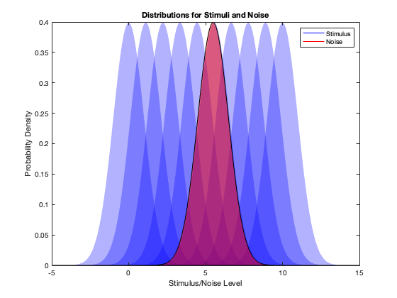
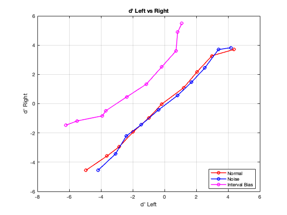
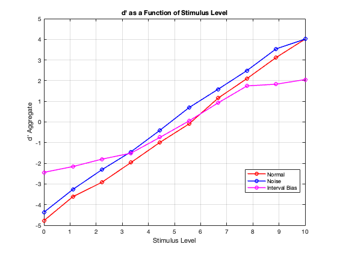
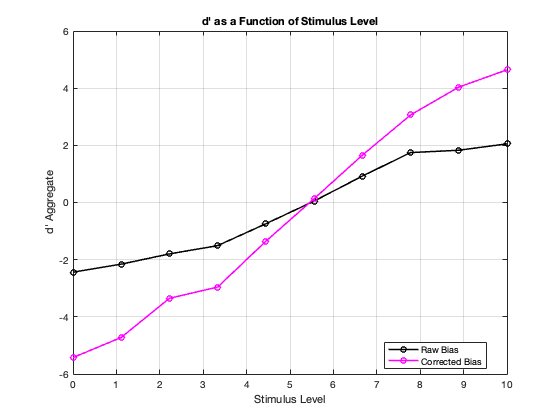
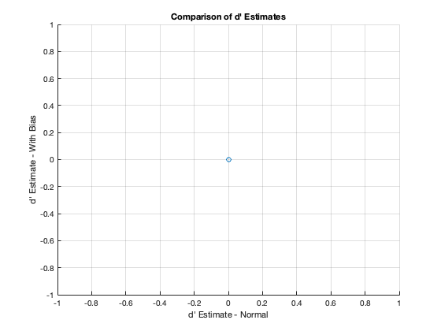

Contents
clear; close all; clc;
The experiment here is a 2AFC method of constant stimuli. There are 10 stimuli levels and a noise level that is chosen randomly from one of the stimulus levels. At each trial, one of the stimuli levels are chosen and the stimulus is presented either on the left or right randomly, and the task of the subject is to determine if the stimulus is on the left or on the right. Initialization
nStim = 10; % Number of stimuli nTrials = 1e3; totalTrials = nStim * nTrials; stimuli = linspace(0, 10, nStim); % Stimulus - levels selected noiseLvl = min(stimuli) + (max(stimuli) - min(stimuli)) * rand; % Randomly choose noise level % If the noise is lower than signal its a detection task, if the noise is % in between, its a discrimination task constNoise = 0.6; % Constant noise intervalBias = 0.5; % Bias value, get interesting plots when bias = 1 and -1 so this is correct! % Plot stimulus and noise distributions % Visualziing stimuli and noise ditributions to make sure the task is hard % enough but not too hard figure; x = linspace(-5, 15, 1000); for i = 1:nStim y = normpdf(x, stimuli(i), 1); fill(x, y, 'b', 'FaceAlpha', 0.3, 'EdgeColor', 'none'); hold on; end fill(x, normpdf(x, noiseLvl, 1), 'r', 'FaceAlpha', 0.5); hStimulus = plot(NaN, NaN, 'b', 'DisplayName', 'Stimulus'); hNoise = plot(NaN, NaN, 'r', 'DisplayName', 'Noise'); xlabel('Stimulus/Noise Level'); ylabel('Probability Density'); title('Distributions for Stimuli and Noise'); legend([hStimulus, hNoise], 'Location', 'northeast'); % Simulate side where the signal is on each trial uniformly % Seq is the sequence of stimuli levels, chosen randomly. One step close to % adding history effects :/ side = randsample([-1, 1], totalTrials, true); seq = repmat(stimuli, 1, nTrials); seq = seq(randperm(length(seq))); % Psychometric function for performing the decision making logistic = @(x) 1 ./ (1 + exp(-x)); % Sample noise and signal from a standard normal distribution given the % mean which is the signal and the noise levels noiseSamp = normrnd(noiseLvl, 1, [1, totalTrials]); signalSamp = normrnd(seq, 1, [1, totalTrials]); % Get the probablility of making response given the signal and noise for % different conditions prob = logistic(signalSamp - noiseSamp); probWithNoise = logistic(signalSamp - noiseSamp + constNoise); probWithIntervalBias = logistic(signalSamp - noiseSamp); probWithIntervalBias(side == 1) = min(probWithIntervalBias(side == 1) + intervalBias/2, 1); probWithIntervalBias(side == -1) = max(probWithIntervalBias(side == -1) - intervalBias/2, 0); % Get ther respones by comparing probablity to a random number. Turnint it % into -1 or 1 depending on the side of the stimulus resp = 2 * (rand(1, totalTrials) < prob) - 1; resp = resp .* side; respWithNoise = 2 * (rand(1, totalTrials) < probWithNoise) - 1; respWithNoise = respWithNoise .* side; respWithIntervalBias = 2 * (rand(1, totalTrials) < probWithIntervalBias) - 1; respWithIntervalBias = respWithIntervalBias .* side; % Initialize a structure to store d' on each side and d' aggregated (i am % not entirely sure of the aggregate d' here but seems to work) metrics = struct('normal', zeros(2, nStim), 'noise', zeros(2, nStim), ... 'intervalBias', zeros(2, nStim)); aggMetrics = struct('normal', zeros(1, nStim), 'noise', zeros(1, nStim), ... 'intervalBias', zeros(1, nStim)); % Simulating the experiment as a psychophysics task and computing d' % without noise, with noise and with interval bias for each side for i = 1:nStim for j = 1:2 sVal = 2 * j - 3; trials = (seq == stimuli(i)) & (side == sVal); % Without noise metrics.normal(j, i) = calcDPrime(resp, trials, sVal); % With constant noise metrics.noise(j, i) = calcDPrime(respWithNoise, trials, sVal); % With interval bias metrics.intervalBias(j, i) = calcDPrime(respWithIntervalBias, trials, sVal); end end % Simulating the experiment as a psychophysics task and computing d' % without noise, with noise and with interval bias as an aggregate for i = 1:nStim trialsleft = (seq == stimuli(i)) & (side == -1); trialsright = (seq == stimuli(i)) & (side == 1); % Without noise aggMetrics.normal(i) = calcDPrimeAggregate(resp, trialsleft, trialsright); % With constant noise aggMetrics.noise(i) = calcDPrimeAggregate(respWithNoise, trialsleft, trialsright); % With interval bias aggMetrics.intervalBias(i) = calcDPrimeAggregate(respWithIntervalBias, trialsleft, trialsright); end % d-prime for left and right sides figure; plot(metrics.normal(1, :), metrics.normal(2, :), 'ro-', 'LineWidth', 1.5, 'DisplayName', 'Normal'); hold on; plot(metrics.noise(1, :), metrics.noise(2, :), 'bo-', 'LineWidth', 1.5, 'DisplayName', 'Noise'); plot(metrics.intervalBias(1, :), metrics.intervalBias(2, :), 'mo-', 'LineWidth', 1.5, 'DisplayName', 'Interval Bias'); xlabel("d' Left"); ylabel("d' Right"); title("d' Left vs Right"); grid on; legend('Location', 'best'); hold off; % d-prime as a function of stimulus level figure; plot(stimuli, aggMetrics.normal, 'ro-', 'LineWidth', 1.5, 'DisplayName', 'Normal'); hold on; plot(stimuli, aggMetrics.noise, 'bo-', 'LineWidth', 1.5, 'DisplayName', 'Noise'); plot(stimuli, aggMetrics.intervalBias, 'mo-', 'LineWidth', 1.5, 'DisplayName', 'Interval Bias'); xlabel("Stimulus Level"); ylabel("d' Aggregate"); title("d' as a Function of Stimulus Level"); legend('Location', 'best'); grid on; hold off; % d-prime for interval bias before and after correction figure; plot(stimuli, aggMetrics.intervalBias, 'ko-', 'LineWidth', 1.5, 'DisplayName', 'Raw Bias'); hold on; plot(stimuli, (metrics.intervalBias(1, :)+ metrics.intervalBias(2, :))./sqrt(2), 'mo-', 'LineWidth', 1.5, 'DisplayName', 'Corrected Bias'); xlabel("Stimulus Level"); ylabel("d' Aggregate"); title("d' as a Function of Stimulus Level"); legend('Location', 'best'); grid on; hold off; % Fit a cumulative Gaussian to the d' data % Comment: This makes sense to me because dprime should saturate when the % trials are too easy and too hard, I guess I am not getting the point of % computing the parameters, so analysis after this probably makes no sense fitFunc = @(b, x) 1 ./ (1 + exp(-b(1) * (x - b(2)))); betaNormal = nlinfit(stimuli, aggMetrics.normal, fitFunc, rand(2, 1)); betaNoise = nlinfit(stimuli, aggMetrics.noise, fitFunc, rand(2, 1)); betaBias = nlinfit(stimuli, aggMetrics.intervalBias, fitFunc, rand(2, 1)); % Use the fitted parameters to estimate d' at various stimulus levels stimLevelsFine = linspace(min(stimuli), max(stimuli), 1e3); dPrimeEstNormal = fitFunc(betaNormal, stimLevelsFine); dPrimeEstNoise = fitFunc(betaNoise, stimLevelsFine); dPrimeEstBias = fitFunc(betaBias, stimLevelsFine); figure; scatter(dPrimeEstNormal, dPrimeEstBias); xlabel('d'' Estimate - Normal'); ylabel('d'' Estimate - With Bias'); title('Comparison of d'' Estimates'); grid on;
Functions to compute d-prime
function dP = calcDPrime(responses, trials, sVal) % This function computes dprime separately for left and right sides hits = sum(responses(trials) == sVal); misses = sum(responses(trials) == -sVal); fAlarms = sum(responses(trials) == -sVal); cRejects = sum(responses(trials) == sVal); hitRate = (hits + 0.5) / (hits + misses + 1); fAlarmRate = (fAlarms + 0.5) / (fAlarms + cRejects + 1); dP = norminv(hitRate) - norminv(fAlarmRate); end function dP = calcDPrimeAggregate(responses, trialsLeft, trialsRight) % This function compute dprime aggregated over left and right side hits = sum(responses(trialsLeft) == -1) + sum(responses(trialsRight) == 1); misses = sum(responses(trialsLeft) == 1) + sum(responses(trialsRight) == -1); fAlarms = sum(responses(trialsLeft) == 1) + sum(responses(trialsRight) == -1); cRejects = sum(responses(trialsLeft) == -1) + sum(responses(trialsRight) == 1); hitRate = (hits + 0.5) / (hits + misses + 1); fAlarmRate = (fAlarms + 0.5) / (fAlarms + cRejects + 1); dP = norminv(hitRate) - norminv(fAlarmRate); end
Warning: Unable to find a step that will decrease SSE. Returning results from last iteration. Warning: Some columns of the Jacobian are effectively zero at the solution, indicating that the model is insensitive to some of its parameters. That may be because those parameters are not present in the model, or otherwise do not affect the predicted values. It may also be due to numerical underflow in the model function, which can sometimes be avoided by choosing better initial parameter values, or by rescaling or recentering. Parameter estimates may be unreliable.   